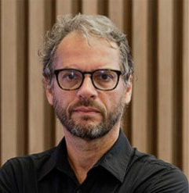
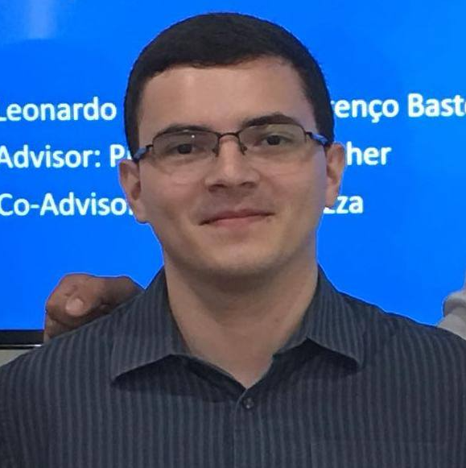
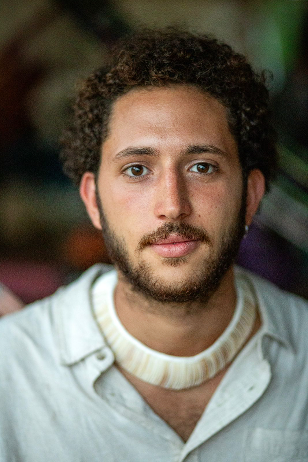
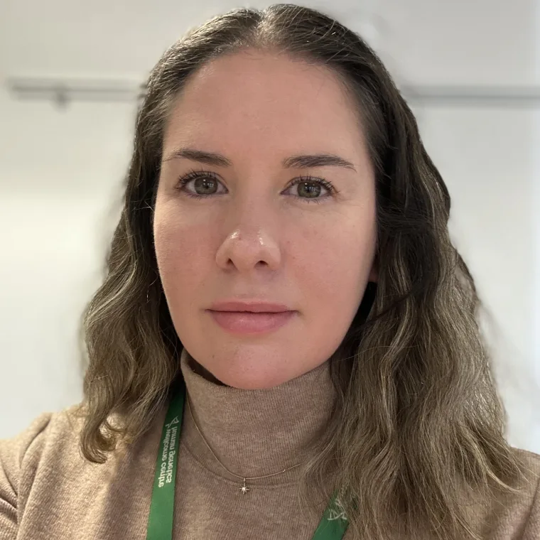
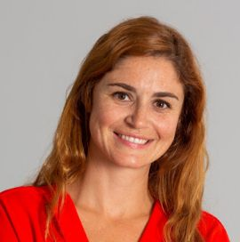
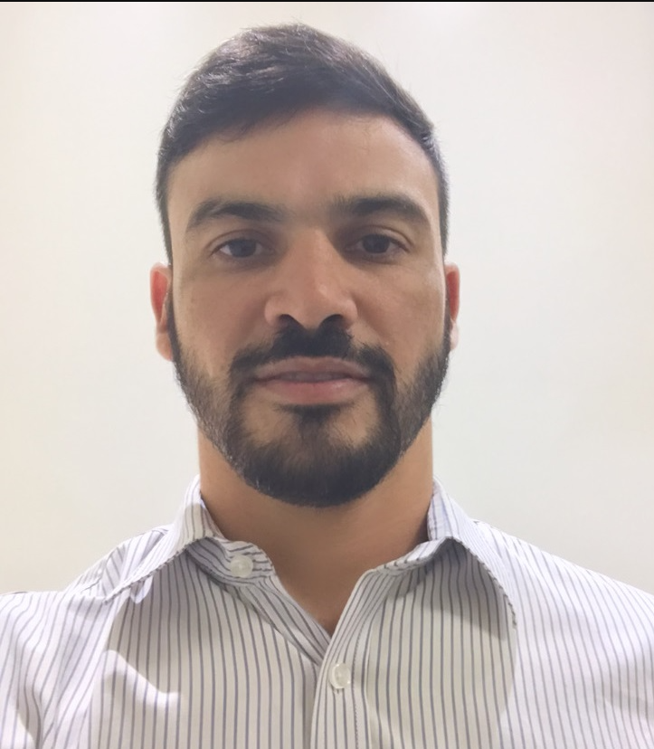
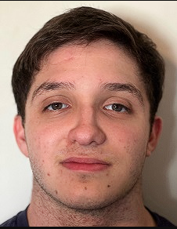
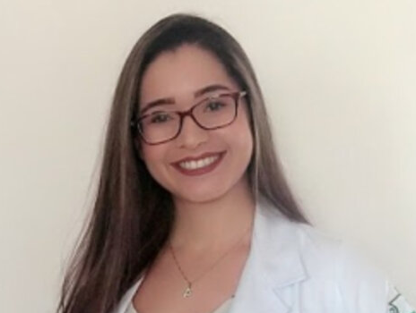
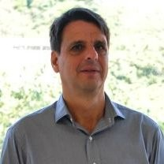
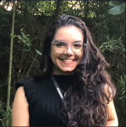

Conheça os pesquisadores e colaboradores do ISARIC South America Hub

D.Sc./Ph.D. Medicina, Pesquisador (FIOCRUZ/NOVA Medical School/IDOR), M.D.
Líder do ISARIC HUB América do Sul

D.Sc./Ph.D. Engenharia de Produção, Prof. DEI (PUC-Rio)
Coordenador Ciência de Dados

M.Sc. Relações Internacionais, Pesquisador (FIOCRUZ)
Coordenador Engajamento Comunitário e Capacitação

D.Phil./Ph.D. Medicina Clínica, Universidade de Oxford
Coordenadora Clinical Research

D.Sc./Ph.D. Psicologia Clínica, Universidade Nova de Lisboa
Coordenadora HUB América do Sul

D.Sc./Ph.D. Engenharia de Produção, Prof. DEI (PUC-Rio)
Pesquisador Ciência de Dados

Iniciação Científica, Ciência da Computação (PUC-Rio)
Pesquisador Ciência de Dados

M.Sc. Patologia (UFMG)
Pesquisador Clinical Research / Gestora de Dados

D.Sc./Ph.D. Engenharia de Produção, Prof. Titular DEI (PUC-Rio)
Pesquisador Associado

Estagiária, Ciência, Tecnologia e Inovação (Ilum / PUC-Rio)
Pesquisador Ciência de Dados